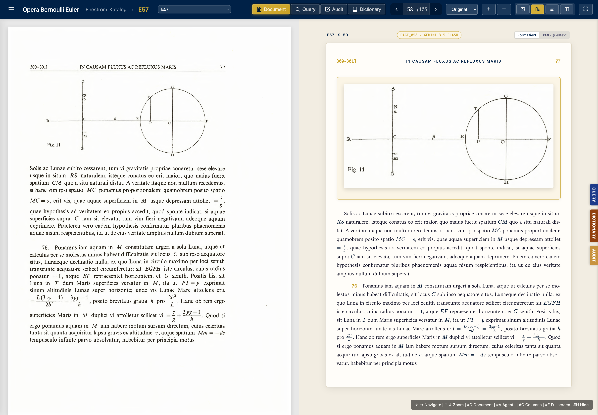
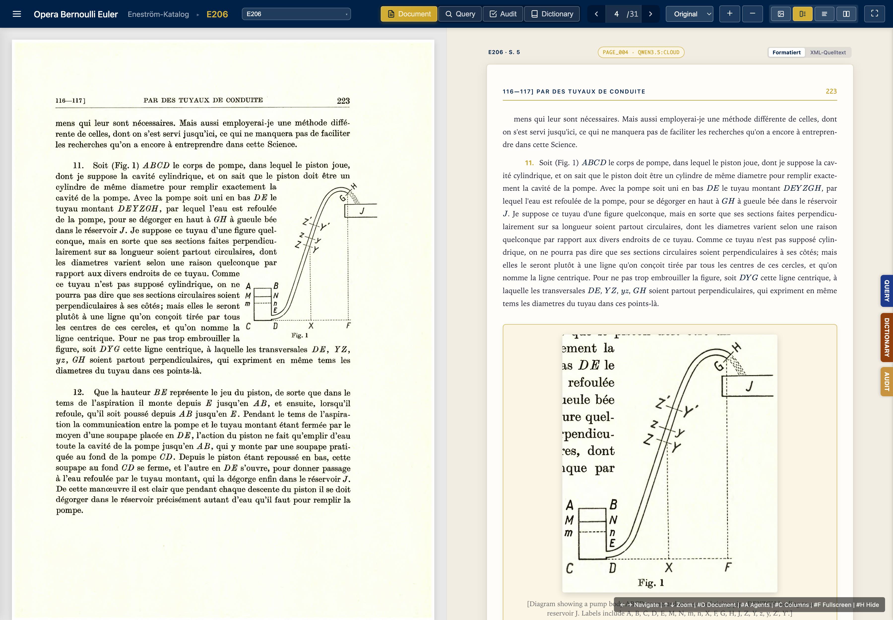

![]()
flowchart LR
subgraph verbund["Eigener Rechnerverbund"]
A["Mac Studio: Speicher, Viewer, Abfragen"]
B["Mac mini: Stapel-OCR, Sprachmodell"]
C["Mac M4: Stanza, Einbettung"]
A --- B
A --- C
end
D["Gehosteter Transkriptionspfad"]
verbund -. "Seitenbilder" .-> D
D -. "Transkripte" .-> verbund
Famulus. Eine verteilte lokale Plattform für professionelle Forschung
Zusammenfassung
Die spezialisierten Fachkräfte (Agents) von Famulus führen erprobte wissenschaftliche Arbeitsweisen aus – finden, lesen, datieren, zählen, vergleichen, rekonstruieren, prüfen – im eigenen, sicheren und nur privat zugänglichen Rechnerverbund, mit einem nachprüfbaren Fundort für jeden Schritt. Drei Einrichtungen tragen diese Arbeit: eine Sprachinstitution mit registrierten, zitierbaren und revidierbaren Gebrauchsregeln; eine Wissensbasis mit erschlossenen Sammlungen und einem Index der Aussagen selbst, nicht nur der Wörter; und, gleichrangig, eine Methodeninstitution, die computational epistemology als methodisch reflektierter Apparat wissenschaftlicher Forschung. Das Modell stützt sich auf eigene Quellen und verbessert sich dynamisch auf der Basis eigener Eingaben. Die Substanz – Regeln, Wissensbasis, Methodenapparat und die Spur jedes Schritts – liegt außerhalb des LLM im eigenen Arbeitsbereich von Famulus. Famulus wird trainiert, Fakten heranzuziehen, die richtigen Schlüsse zu ziehen und kritisch zu forschen. Damit ist es im Kern auf die Validierung von Aussagen angelegt und nicht abhängig von unkontrollierbaren Informationen, die nicht nachvollziehbare Quellen ins Internet gehängt haben. Der Forscher arbeitet mit Famulus in Notebooks: Ein Block stellt eine Frage, spielt eine Partitur und hält Antwort, Prüfung und Spur fest. Notebooks werden lokal geführt, in einer Gruppe über ein gemeinsames Verzeichnis von Quellen und Referenzdaten geteilt und können Grundlage einer Publikation werden. Partituren sollen, wie die Stilpakete eines Textsatzsystems, in einem öffentlichen Repositorium mit systematischem Katalog gemeinsam genutzt und weiterentwickelt werden.
Schlüsselwörter
Famulus, Forschung, computational epistemology, Sprachinstitution, Aussagenindex, Gebrauchsregel, Famulus Notebook, Partitur
1 Neugier
Ein Gelehrter fragt nach Keplers Weg zur Erklärung der Ellipsenbahn. Die Frage ist kurz; ihre Beantwortung verlangt viele Schritte. Welche Quellen sprechen zur Sache? Welche Briefe schrieb Kepler in welchen Jahren, an wen gerichtet, und wo erwähnt er die Astronomia Nova? An wie vielen Stellen verzeichnen die Bände der Kepler-Gesamtausgabe den Namen Tychos, und unter welchen Schreibweisen? Was meint Kepler 1596 im Mysterium Cosmographicum mit anima motrix, was 1609 in der Astronomia Nova mit vis motrix, und warum schreibt er 1621 in der zweiten Auflage des Mysterium, man möge für das Wort anima das Wort vis einsetzen? Welche Aussagen in den lateinischen Bänden behaupten ein Kausalverhältnis zwischen Planetenabstand und Umlaufzeit, und welche davon sind mit Belegen unterlegt?
Das ist ein Arbeitstag. Wer diesen Horizont von Hand durchmessen will, wählt aus: Er liest einen der Bände, stellt zwölf Belege zusammen statt aller, schreibt den Befund in der Sprache, mit der er anfing, und hört auf, weil die Zeit es gebietet – nicht weil das Verfahren falsch wäre. Was unterbleibt, ist nicht Nachlässigkeit. Es ist eine Grenze der Zeit gegen ein Verfahren, das richtig und aufwendig zugleich ist.
Der Famulus – der Gehilfe, der Material vorbereitet und nicht urteilt – ist in der Gelehrtengeschichte vertraut. Erasmus von Rotterdam beschäftigte in Basel Amanuenses: einer schrieb nach Diktat, ein anderer ordnete Manuskripte, ein dritter stellte Belegstellen zusammen. Keiner von ihnen schrieb den Aufsatz; keiner urteilte über Erasmus’ Beweisführung. Der Gelehrte urteilte. Die Amanuenses erweiterten seinen Horizont: Sie machten in einem Tag zugänglich, was der Gelehrte in einer Woche nicht gelesen hätte. Famulus heißt diese Plattform nach diesem Vorbild. Sie besteht aus spezialisierten Fachkräften (Agents), von denen jede eine Arbeitsweise beherrscht: Material vorbereiten, Lemmata zählen, Briefe ordnen, Hypothesen an Quellen prüfen, Argumente in Schlussformen rekonstruieren. Keine von ihnen urteilt.
Die erste Frage des Gelehrten – wer schreibt in welcher Form, unter welchem Namen – wird an einem laufenden Speicher beantwortet:
HinweisBemerkenswert
Eine Person in wechselnden Schreibweisen, drei Sammlungen, Millisekunden
Dieselbe Frage nach einer Person, deren Name in den Quellen in vielen Formen erscheint, an drei Sammlungen gestellt: eulerOO findet 56 Formen von Bernoulli in 19 ms, kepler-prim 108 Formen von Tycho in 33 ms, karman-nachlass 85 Formen von Prandtl in 24 ms (jeweils Median aus 19 Wiederholungen). Die Formen stammen aus den Quellen selbst, nicht aus einer vorab gepflegten Namensliste; jede Form führt zu ihren Sätzen.
Messlauf vom 23. September 2026, results.json#P1
Das ist der erste Schritt: finden. Die weiteren folgen aus ihm – lesen, transkribieren, datieren, zählen, vergleichen, rekonstruieren, ordnen, entwerfen, prüfen. Die Plattform führt jeden davon aus; wo sie an ihre Grenze kommt, benennt sie die Grenze. Die Schritte eines Forschers halten sich in einem Notebook fest, das Frage, Antwort und Prüfung zusammen aufbewahrt und mit anderen geteilt werden kann (Kapitel 10). Der Gelehrte urteilt.
2 Verbund von Kompetenzen – AI Agenten im Zusammenspiel mit Forschern
Die Fachkräfte von Famulus führen erprobte wissenschaftliche Arbeitsweisen aus – in ihrer ganzen Reichweite, in der Zeit, die die Sache lässt, nachprüfbar in jedem Schritt. Das setzt drei Bedingungen voraus.
Erstens beherrscht jede Fachkraft die Sprache ihres Fachs. Die Regeln, denen sie im Gebrauch der Wörter folgt, sind aufgeschrieben, zitierbar und revidierbar; sie liegen nicht stumm in den Gewichten eines Modells. Eine Regel ist dabei eine Praxis, die gelehrt, zitiert und korrigiert werden kann, keine Richtlinie, die man befolgt, ohne sie aussprechen zu können (Wittgenstein 2022, PU §201–202). Diese Bedingung erfüllt die Sprachinstitution (Kapitel 7).
Zweitens antwortet jede Fachkraft aus einer erschlossenen Wissensbasis: den kuratierten Sammlungen von Seiten und Objektakten. In ihr hat jede Behauptung ihren Fundort, den Belegort (Sammlung, Dokument, Seite, Satz) (Kapitel 5). Zur Wissensbasis gehört ein Aussagenindex. Er verzeichnet nicht das Wort, sondern was ein Satz behauptet. Der Unterschied ist sachlich begründet: Sätze drücken Aussagen aus, und nur Aussagen sind wahr oder falsch. Sachverhalte bestehen oder bestehen nicht; eine Tatsache ist ein bestehender Sachverhalt. Weder Sachverhalte noch Tatsachen sind Wahrheitsträger; sie sind Teile der Welt. Der Index der Aussagen ist deshalb der Gegenstand, an dem die Methodeninstitution arbeitet (Kapitel 6).
Drittens arbeitet jede Fachkraft unter einer zweiten Institution, die der Sprachinstitution im Rang gleichsteht: der computational epistemology, dem methodisch reflektierten Apparat wissenschaftlicher Methode. Zu ihm gehören Schlussformen, die Rekonstruktion und Bewertung von Argumenten, die Prüfung von Hypothesen, die kausale Analyse, die Messung mit Fehlermodell und die Rekonstruktion von Entdeckungen (Kapitel 8). Wie die Sprachinstitution die Regeln des Sprachgebrauchs registriert, so registriert dieser Apparat die Regeln des Schließens und Prüfens. Er bemisst jede Behauptung an ihrer Rechtfertigung vor dem besten verfügbaren Wissen.
Die Fachkräfte lernen. Wo ihnen Kenntnis oder Fertigkeit fehlt, wird die Lücke erkannt, in einer Rückkopplungsschleife ausgewertet und als Revision mit Lebenszyklus in Regeln, Verfahren und Sprachverständnis überführt. Jede Revision trägt ihre Begründung und kann zurückgenommen werden. Dass eine Fachkraft von einer anderen lernt und eine abweichende Sicht mit Begründung vorträgt, ist als Entwurf formuliert; eine laufende Instanz gibt es dafür noch nicht (Lücke G5).
Der Forscher und die Fachkräfte arbeiten in einer gemeinsamen Form zusammen: im Notebook. Dort stellt der Forscher die Frage, eine Fachkraft spielt die Partitur, die den Weg zur Antwort beschreibt, und das Notebook hält fest, was geschah und wie das Ergebnis geprüft wurde (Kapitel 10). Die Partituren selbst sind Dokumente, die geteilt und gemeinsam weiterentwickelt werden können (Kapitel 11).
3 Die Forschung hinter dem Instrument
Drei Forschungsprogramme stehen hinter der Plattform, jedes mit einem ausgeführten Fall und seiner Akte.
Bedeutung als Gebrauch
Was ein Terminus bedeutet, zeigt sich in seinem Gebrauch in einer Praxis (Wittgenstein 2022, PU §43). Eine Gebrauchsregel lässt sich registrieren, zitieren und korrigieren. Eine Praxis, der gefolgt wird, ohne dass die Regel ausgesprochen werden könnte, ist keine Regelpraxis in diesem Sinn (Wittgenstein 2022, PU §201–202). Regelfolgen ist das Ausführen einer Praxis, nicht nur das Kennen einer Regel. Regeln identifiziert man deshalb nicht durch Introspektion, sondern durch die Beobachtung von Mustern im Gebrauch.
Der Fall ist Keplers Rede von der Ursache der Planetenbewegung. Im Mysterium Cosmographicum von 1596 bewegt eine Seele die Planeten: Entweder sind die bewegenden Seelen um so schwächer, je weiter sie von der Sonne entfernt sind, oder es gibt eine einzige bewegende Seele im Zentrum aller Bahnen, in der Sonne, deren Antrieb mit der Entfernung erlahmt. In der Astronomia Nova von 1609 ist die Ursache eine bewegende Kraft im Körper der Sonne, die wie das Licht in einem größeren Umkreis verdünnt und in einem kleineren verdichtet wird. In der zweiten Auflage des Mysterium von 1621 kommentiert Kepler seinen früheren Satz selbst: Setze man für das Wort anima das Wort vis, so habe man das Prinzip selbst, aus dem die Himmelsphysik der Astronomia Nova hervorgegangen sei. Früher habe er geglaubt, die Ursache der Planetenbewegung sei eine Seele; als er bedachte, dass diese Ursache mit der Entfernung schwächer wird wie das Licht der Sonne, habe er geschlossen, diese Kraft sei etwas Körperliches.
sense_locus, sense_relation_evidence, Sammlung kepler-prim).
| Jahr | Werk | Fundort (Band, Seite, Satz) |
Wortlaut (Auszug) |
|---|---|---|---|
| 1596 | Mysterium Cosmographicum | KGW 1, 83, 9 | aut, vnam esse motricem animam in orbium omnium centro, scilicet in Sole |
| 1609 | Astronomia Nova | KGW 3, 44, 0 | Virtutem motricem plane ut Lucem, recipere quantitates, extenuariqe in majori ambitu, condensari in minori |
| 1621 | Mysterium, 2. Auflage | KGW 8, 109, 17 | Si pro voce Anima, vocem Vim substituas, habes ipsissimum principium |
| 1621 | Mysterium, 2. Auflage | KGW 8, 109, 22 | hinc conclusi, Vim hanc esse corporeum aliquid |
Das Wörterbuch der Plattform führt beide Gebrauchsweisen als eigene Bedeutungen mit Autor, Werk und Zeitraum: anima motrix für 1596, vis motrix für 1609–1621, verbunden durch die Beziehung „ersetzt“, die mit den Sätzen der Anmerkung von 1621 belegt ist. Jede Bedeutung trägt eine Gebrauchsregel. Die Regel zu anima motrix lautet: Keplers Text von 1596 als Rede von einer bewegenden Seele lesen und die Kraft von 1609 nicht in ihn zurücklesen. Die Zählung allein entscheidet die Bedeutung nicht. In den lateinischen Sätzen des Bandes von 1596 steht anima motrix in 2 Sätzen, vis oder virtus motrix in 3; im Band von 1609 sind es 6 und 30 (Zählung nach dem Satzschlüssel (doc_id, pidx, sent_idx), nur lateinische Sätze, Muster der jeweiligen Bedeutung). Beide Wörter stehen also in beiden Werken. Was sich ändert, ist ihr Gebrauch: die Rolle, die das Wort in Keplers Erklärung der Planetenbewegung spielt.
Bedeutungsgeschichte als Forschungsprogramm
Die Bedeutungsgeschichte ist ein eigenes Forschungsfeld, das die Plattform trägt. Die 4 287 Abschnitte der Referenztexte, die nach Paragraphen oder Abschnittsnummern verankert sind, stammen aus elf Werken; zu ihnen treten die Sätze der erschlossenen Sammlungen. Aus beiden wird rekonstruiert, wie ein Begriff in einer Gemeinschaft entstand, sich veränderte und in konkurrierende Traditionen auseinanderfiel. Das Wörterbuch bildet diese Geschichte ab: je Lemma ein Kopfwort mit Bedeutungen, je Bedeutung Autor, Werk, Zeitraum, Diskussionszusammenhang und Zitat aus dem Fundort. Heute verzeichnet es 171 Bedeutungen mit 720 Fundorten. Keiner Bedeutung wird ohne Beleg eine Epoche zugeschrieben.
Eine Bedeutung, die an Autor, Werk und Zeit gebunden ist, lässt sich auch umgekehrt gebrauchen: Ein Textstück ohne Angabe kann an den Sprachgebrauch der bekannten Autoren und Werke gehalten werden. Wie weit das trägt, ist gemessen (Situierung eines Textstücks, Kapitel 7).
Die Regularitätstheorie der Kausalität
Das zweite Programm ist die Bewertung kausaler Hypothesen. Eine minimale Theorie legt für einen gegebenen Typ von Wirkung fest, welche Kombinationen von Faktoren für sie hinreichen, ohne einen unnötigen Faktor zu enthalten (Graßhoff und May 2001). Sie ist eine Disjunktion minimal hinreichender Bedingungen; das Bündel der Glieder einer solchen Bedingung heißt Cluster. Homogenität wird in dieser Theorie minimiert, nicht maximiert: Die Bedingung verlangt nur, dass eines der Glieder jedes alternativen Clusters gemeinhin fehlt, sodass die alternativen Cluster außer Kraft sind, während das Feld homogen bleibt. Das hält den Aufwand des Experimentierenden gering und lässt zulässige kausale Schlüsse aus Experimenten zu, die eine stärkere Forderung verböte.
Abbildung 1 zeigt eine minimale Theorie in der kausalen Bildsprache der Plattform.

causal-architect/figures/cvl-schematic-mt.svg
Der Fall, an dem diese Theorie erprobt wurde, ist die Entdeckung des Harnstoffzyklus durch Hans Krebs und Kurt Henseleit im Jahr 1932. Die Laborbücher wurden transkribiert, die Schritte des Entdeckungsprozesses rekonstruiert und mit Computermodellen nachvollzogen (Graßhoff 1998; Graßhoff u. a. 2001; Graßhoff und May 2003). Die Rekonstruktion des experimentellen Vorgehens von Krebs und Henseleit ist zugleich ein Fall für die Analyse der Begriffe, die im Labor entstanden (Nickelsen und Graßhoff 2009). Der Schritt, an dem der Zyklus sichtbar wurde, ist der Ornithin-Effekt: Ornithin beschleunigt die Harnstoffsynthese, ohne dabei verbraucht zu werden. Er hat seinen Belegort in den Einträgen der Laborbücher und in den Versuchsreihen, die Krebs im Frühjahr 1932 durchführte (Graßhoff und May 2003).
Die Rezeption der Regularitätstheorie in der philosophischen Literatur – ihre Aufnahme im Eintrag „causation-regularity“ der Stanford Encyclopedia of Philosophy und die methodischen Weiterentwicklungen durch Baumgartner und Falk – ist nicht belegt, solange diese Quellen nicht in der Wissensbasis stehen (Lücke G1).
Entdeckung aus Quellen und Objekten
Das dritte Programm behandelt Entdeckung als rekonstruierbaren Prozess aus Primärquellen, nicht als Ereignis, das man nur beschreiben kann. Neben dem Harnstoffzyklus wurde es auf weitere Gebiete ausgedehnt. Keplers Astronomia Nova wurde als Rekonstruktion von Argumenten aus den Quellen bearbeitet (Graßhoff 1999); das Euler-Eneström-Korpus und die babylonischen Astronomischen Tagebücher folgten. Jedes dieser Projekte hat seine eigene Quellenlage, seine eigene Sprache und seinen eigenen Typ von Evidenz; sie teilen das Verfahren.
Die Säulen des Pantheon in Rom wurden aus 3D-Vermessungsdaten entschlüsselt: ihre Proportionen, ihre Bauabfolge, ihre Lichtführung – aus einem Punktwolken-Korpus und seiner geometrischen Analyse (Graßhoff, Gerd und Berndt, Christian 2014). Die Scandaten, auf denen diese Analyse beruht, sind in der Wissensbasis nicht zugänglich (Lücke G4).
Die konischen Sonnenuhren der Antike wurden aus 3D-Scans rekonstruiert: Rillen und Stundenlinien werden erkannt, die geographische Breite, für die eine Uhr gebaut wurde, wird berechnet, und aus mehreren unabhängigen Messungen wird ein Konsens gebildet. Eine unabhängige Messreihe heißt dabei Zeuge, das Ergebnis über die Zeugen der Konsens.
4 Warum lokal, warum verteilt
Drei Folgen begründen die lokale Architektur; jede ist eine Bedingungsaussage.
Erstens: Wenn die Sammlungen, Register, Notizen und die Korrespondenz im eigenen Rechnerverbund liegen und dort verarbeitet werden, bleibt die Hoheit über die Daten beim Forscher. Kein fremdes Modell wird auf seinen Quellen trainiert; kein außenstehender Betreiber sieht das Material; die Integritätsregel (Kapitel 5) schützt die Quellschicht vor ihren Ableitungen. Spiegelung und Schnappschüsse laufen im eigenen Rechnerverbund.
Zweitens: Wenn das Transkriptionsmodell lokal geladen ist, liegen die Kosten pro Seite bei den Betriebskosten des eigenen Rechners, ohne Volumengebühr und ohne Preisänderungsrisiko. Wenn gehostete Modelle eingesetzt werden, verlassen Seitenbilder den Rechnerverbund, und die Kosten sind messbar. Im Abrechnungsspeicher ocr_billing.duckdb sind bis zum 23. September 2026 425 Seiten über den gehosteten Pfad verbucht, 39 davon als Einzelanfrage und 386 im Stapelverfahren. Die Kosten je Seite liegen im Median bei 0,29 US-Cent, in der Spanne 0,06–0,93 US-Cent. Der weitaus größere Durchsatz, darunter die 38 197 Seiten des Kármán-Nachlasses, lief über lokal geladene Modelle; er erscheint im Abrechnungsspeicher nicht, weil dort keine Geldkosten anfallen, und ist in den Manifesten der Sammlungen (status.json) und in ihren Stanza-Speichern ausgewiesen.
Diese Speicher umfassen 19 Stanza-Datenbanken mit 32 802 294 Token und 1 162 022 Entitätsspannen (Neuzählung vom 23. September 2026).
Drittens: Wenn das Modell lokal läuft, sinkt die Latenz am Arbeitsplatz auf die Zeit der Rechnung ohne Netzanteil. Die Abfragezeiten der Leistungstafel – 7 bis 52 ms für Lemma-, Namens- und Wörterbuchoperationen – setzen voraus, dass die Stanza-Datenbanken auf demselben Rechner liegen wie die Abfragen.
Die Plattform ist an kein Modell und keinen Hersteller gebunden. Ihre Substanz – Regeln, Wissensbasis, Methodenapparat, die Spur jeder Verarbeitung – liegt außerhalb des Modells und bleibt beim Modellwechsel erhalten. Modelle erscheinen in diesem Text deshalb als Rolle (Transkriptionsmodell, Einbettungsmodell, Sprachmodell) mit gemessener Leistung; ihre Namen stehen in den Messprotokollen, aus denen die Zahlen stammen.
Der Rechnerverbund besteht aus spezialisierten Rechnern: einem Knoten für die Stapeloperationen (Transkription, Stanza-Analyse, Einbettung) und weiteren für Abfragedienste, Viewer und Monitore. Welcher Rechner was ausführt, steht in einem Register und ist nicht im Code verdrahtet. Die Verbindung zwischen den Rechnern läuft über ein privates, verschlüsseltes Netz, das nur die eigenen Geräte kennt. Abbildung 2 zeigt den Verbund mit der Grenze des geschlossenen Betriebs: was innerhalb bleibt und was – der gehostete Transkriptionspfad – ihn verlässt.
Die Konformität mit europäischem Recht ist eine Folge der Architektur, keine Zusicherung: Was im eigenen Rechnerverbund verarbeitet wird, verlässt ihn nicht; Verantwortlicher und Verarbeiter fallen zusammen; die Spur jeder Verarbeitung (Kapitel 9) ist Teil des Systems. Die rechtliche Einordnung nach DSGVO und KI-Verordnung setzt die Rechtstexte in der Wissensbasis voraus (Lücke G6); bis dahin wird die technische Folge behauptet, nicht die rechtliche Einordnung.
Die erschlossenen Sammlungen mit ihren Manifesten, Registern und Viewern bilden eine Handbibliothek: systematisch geordnet, im Rechnerverbund zugänglich und ohne Sonderkenntnisse benutzbar. Ordnung heißt hier: ein Katalog, ein Manifest je Sammlung, ein Fundort je Seite. 41 Sammlungen tragen ein Manifest; 19 Editionsregister stellen einen Teil davon in Viewern bereit (Neuzählung vom 23. September 2026). Was eine Sammlung enthält und was ihr fehlt, nennt ihr Manifest.
5 Erschlossenes Wissen: Seiten, Objekte, Anschlüsse
Die Wissensbasis kennt zwei Evidenzeinheiten. Die erste ist die Seite – kein Scan und keine Bildschirmdarstellung, sondern ein strukturiertes Transkript unter der Adresse (Sammlung, Dokument-ID, Seitenindex). Was das Transkriptionsmodell aus einem Seitenbild liest, wird in einem XML-Dokument festgehalten, das gegen eine Grammatik (DTD) geprüft ist. Abgeleitete Schichten – Satzbäume, Entitätsspannen, Lemmatabellen, Wörterbucheinträge – bauen auf dieser Schicht auf, ohne sie zu überschreiben. Das ist die Integritätsregel: Abgeleitete Schichten ersetzen die Quellschicht nie.
Abbildung 3 zeigt einen Fall: E57 aus dem Eneström-Werkverzeichnis, Seite 58 (pidx 058), mit Figur 11 und den Formeln zur Gezeitenhöhe – links das Faksimile, rechts die aus der Transkription gewonnene Buchseite mit Kopfzeile, Absatznummern, Formeln und Figur. Der Leser kann dieselbe Seite unter enestroem/E57?p=59 aufrufen und die Transkription an der Vorlage prüfen. Die Abbildung belegt, dass die Transkription überprüfbar ist.

E57 aus dem Eneström-Werkverzeichnis, pidx 058, mit Figur 11 und den Formeln zur Gezeitenhöhe. Links das Faksimile, rechts die strukturierte Buchseite. Aufgenommen am 9. September 2026 vom laufenden Viewer (enestroem/E57?p=59).
Die zweite Evidenzeinheit ist die Objektakte: ein strukturierter Datensatz für ein materielles Objekt mit Scan, Primitiven (rekonstruierten geometrischen Formen), Messtabelle mit Fehlermodell, Zeugentabelle und Konsensurteil. Ihre Adressform (Sammlung, Objekt-ID, Artefakt, Parameter) ist ein Vorschlag, weil kein Standard für sie besteht. Die Sonnenuhr ObjID126 der Sammlung Ancient Sundials der Berlin Sundial Collaboration (Delos, Archäologisches Museum, Inv. B3652) trägt ihre Breite φ = 38,01° aus vier unabhängigen Messreihen als Konsens nach dem Zeugenprinzip; der Wert steht in der Objektakte und ist nicht aus einem Modell interpoliert.
Abgeleitete Schichten verbinden beide Evidenzeinheiten: Satzbäume, erkannte Eigennamen mit ihren Typen, Lemmatabellen mit allen Flexionsformen je Lemma, Orts- und Personenverzeichnisse, Briefregister mit Datierung und Absender-Empfänger-Paaren und das Wörterbuch der Sprachinstitution mit Bedeutungen relativ zu Autor, Werk und Zeit. Jede Schicht hat ihre eigene Adresse; keine überschreibt die Seite oder die Objektakte.
Hinweis
Bestand · fünf Sammlungen
41 Manifeste · 16 bereit · 4 teilbereit · 21 nicht bereit
karman-nachlass: 1 066 Dokumente, 38 197 Seiten, 8,71 Mio. Token. kepler-prim: 486 721 Sätze, davon 325 702 lateinisch. enestroem: 27 047 Seiten bei Manifest not_ready – die Stanza-Schicht steht, die fehlenden Schichten nennt das Manifest.
results.json#P6 · 23. September 2026
Um die Handbibliothek herum liegt das Wissen, das über Schnittstellen zugänglich ist. Ein Anschluss ist eine Schnittstelle zu einem außenliegenden Datenbestand. Er stellt jeden übernommenen Datensatz unter dieselbe Adressdisziplin: Herkunft, Abfragezeitpunkt, Fundort im Quellsystem.
| Anschluss | Stand |
|---|---|
| Dimensions-Publikationsdaten (arXiv, ORCID, DOI) | vorhanden |
| BibLaTeX-Bibliographien (Kuratierung) | vorhanden |
| Bibliothekskataloge (GND, WorldCat) | fehlt |
| Wikidata, Europeana | fehlt |
| IIIF-Bildserver | fehlt |
Wo ein Standard besteht, wird er übernommen: EDTF (ISO 8601-2) für Datierungen, DOI und ORCID für Identität, BibLaTeX für Bibliographie, DTD-Grammatiken für die Struktur der Seite. Wo keiner besteht – Objektakte, Fundort –, wird eine Form vorgeschlagen und als Vorschlag gekennzeichnet.
Kuratiertes Wissen tritt als Referenzautorität in die Wissensbasis ein: Referenzwerke, Fachlexika und Normen werden nach Sigle und Fundort zitiert, nie aus dem Modell paraphrasiert. Registriert sind 11 Autoritäten in lwgrammar_reference.duckdb. Der Bestand wächst nur durch Aufnahme mit Nachweis.
Auch das Verfahrenswissen der Plattform – Instruktionen, Partituren, Gebrauchsregeln, Prüfverfahren – ist Bestand der Wissensbasis: mit Version, Begründung und Lebenszyklus, revidiert durch die Lernschleife (Kapitel 9), nie still überschrieben. Von 39 Instruktionsversionen in assessment.duckdb sind 30 aktiv, 6 zurückgewiesen und 3 abgelöst. Die Tabelle der Partiturversionen hat 0 Zeilen: Die Lernschleife für Partituren ist implementiert, aber noch nicht gelaufen.
Die Adressdisziplin – ein Fundort für jede Behauptung – ist die technische Bedingung dafür, dass die Plattform überprüfbar ist. Eine Behauptung ohne Fundort kann man glauben oder ablehnen, aber nicht prüfen. Wer eine Behauptung der Plattform prüfen will, findet unter der Adresse (Sammlung, Dokument-ID, Seitenindex, Satznummer) das Dokument, den Satz und die Ableitung und kann dort widersprechen. Der Widerspruch ist das Verfahren, durch das die Wissensbasis wächst: Die neue Evidenz wird aufgenommen, die widersprechende Aussage als Lücke oder Revision markiert, und der Lebenszyklus beginnt von vorn.
6 Der Aussagenindex
Die Verzeichnisse der Plattform – Wörter, Personen in ihren Schreibweisen, Lemmata, Orte, Zeitangaben – erschließen den überlieferten Apparat. Ein Verzeichnis findet Vorkommen. Der Aussagenindex findet Behauptungen: Er verzeichnet, was ein Satz behauptet – Befunde, Feststellungen von Tatsachen, Grundsätze, Schlussfolgerungen, physikalische und mathematische Aussagen. Wer ein Argument rekonstruiert, braucht die Aussagen, nicht die Wörter.
Der Index ist die Tabelle statements in <Sammlung>_concepts.duckdb mit den Feldern Fundort, Autor, Datum und Thema (concept_key). Bestand am 23. September 2026:
results.json#P8, 23. September 2026).
| Sammlung | Aussagen | mit Datum | mit Autor |
|---|---|---|---|
eulerOO |
306 | 2 (0,7 %) | 6 (2,0 %) |
enestroem |
176 | 0 | 0 |
kepler-prim |
171 | 0 | 0 |
waefler-prim |
64 | 64 (100 %) | 64 (100 %) |
karman-nachlass |
56 | 26 (46 %) | 24 (43 %) |
| Gesamt | 773 |
Ein Aussagendatensatz aus eulerOO_concepts.duckdb: Thema „der Äther (aether)“, Dokument 978-3-0348-0892-7, Seite 79, Satz 5; Datum und Autor sind leer. Der Satz nennt Eulers Versuch, Newtons Gesetz vom umgekehrten Quadrat der Gravitation durch einen Mechanismus des Äthers zu erklären. Die Abfrage nach Äther-Aussagen über eulerOO und enestroem liefert 169 Zeilen in 19 ms (Median); Keplers vis motrix als Thema liefert 7 Zeilen an 6 Fundorten in 8 ms. Gesucht wird hier nach Behauptungen über ein Thema, über mehrere Sammlungen hinweg, nicht nach einem Wort.
Eine Unterscheidung der Aussagen nach Typ – Befund, Feststellung einer Tatsache, Grundsatz, Schlussfolgerung, theoretische oder empirische Aussage – ist vorgeschlagen, aber nicht angelegt: Der Speicher kennt nur den Themenschlüssel, keine Spalte für den Typ (Lücke G10).
Jede Aussage wird einer Quelle zugeordnet oder als theoretische Folgerung ausgewiesen: abgeleitet, ohne eigenen Fundort, mit benannter Schlussform. Normalisierung und Negation, mit denen sich logisch gleichwertige Aussagen erkennen lassen, sind als Fertigkeiten implementiert und tragen den Nadelaudit (Kapitel 8).
Hinweis
Chronologie · Kármán-Nachlass
15 976 Briefe · 881 im Zeitraum 1930–1935 · 9 ms (Median)
Abfrage auf letters_resolved.date_when; pirckheimer: 354 Briefe in 7 ms. Dasselbe Verfahren trägt die zeitliche Ordnung des Aussagenindex.
results.json#P7 · 23. September 2026
Wichtig
Grenze · Felder der Aussagen
Datum in 2 von 306 Aussagen in eulerOO · Autor in 6 von 306
Der Index läuft; die Felder, aus denen Chronologie und Doxographie gebaut werden, sind in drei Sammlungen leer. waefler-prim ist der Gegenfall: 64 Aussagen, alle mit Datum und Autor.
results.json#P8 · 23. September 2026
Aus Autor, Datum und Thema der Aussagen lassen sich Chronologien bilden – wer hat wann welche Aussage vertreten – und Doxographien – die Ordnung der Lehrmeinungen zu einem Thema über Autoren und Zeiten. Beide sind ableitbar; eine laufende Instanz liefert sie noch nicht (Lücke G11).
7 Die Sprachinstitution
Eine Fachkraft ist in der Sprache eines Kontextes kompetent, wenn ihre Gebrauchsregeln registriert, zitierbar und revidierbar sind. Nicht die Gewichte des Modells entscheiden, wie ein Terminus gebraucht wird; die aufgeschriebene Gebrauchsregel entscheidet, und sie lässt sich zitieren, diskutieren und korrigieren. Darin unterscheidet sich Regelfolgen von Konditionierung.
Das Register der Regeln
Das Register ist das Verzeichnis der Regeln, geordnet nach Geltungsbereich, Verbindlichkeit und Lebenszyklus. Eine Regel ist entweder blockierend – ein Text, der sie verletzt, wird nicht übernommen – oder beratend. Jede Regel trägt eine Begründung, ihre Quellstelle, ein positives und ein negatives Beispiel und ihren Lebenszyklus (Einreichung, Status). Revision und Widerruf tragen ebenfalls eine Begründung; kein Eintrag verschwindet still.
lwgrammar_reference.duckdb), Neuzählung vom 23. September 2026.
| Bestand | Zahl | Tabelle |
|---|---|---|
| Aktive Gebrauchsregeln | 34 (26 blockierend, 8 beratend) | usage_rule_entry |
| Revidierte Regeln | 1 | status = revised |
| Widerrufene Regeln | 6 | status = revoked |
| Bedeutungen relativ zu Autor, Werk und Zeit | 171 | term_sense |
| Fundorte der Bedeutungen | 720 | sense_locus |
| Verankerte Abschnitte der Referenztexte | 4 287 | ref_section |
| Referenzautoritäten | 11 | ref_authority |
| Stilprofile (drei Familien) | 56 | style_profile |
| Zeilen des Lemmazensus | 271 094 | reg_lemma_census |
Ein Beispiel: Eine blockierende Regel lautet, dass die Grenzen der Plattform Grenzen der Evidenz und des Verfahrens sind, nie Verweigerungen. Ihr positives Beispiel: „Die Anfrage ist im vorliegenden Bestand nicht belegbar; die Sammlung ist not_ready.“ Ihr negatives Beispiel: „Das ist eine heikle Frage; ich kann Ihnen dabei nicht helfen.“ Eine andere Regel hält fest, dass nur Aussagen wahr oder falsch sind; eine dritte, dass ein Ziel keine Aussage ist, sondern die Beschreibung eines beabsichtigten Sachverhalts, der erreicht wird oder nicht.
Die verankerten Referenzabschnitte stammen aus elf Primärwerken, darunter die Philosophischen Untersuchungen, Über Gewissheit, der Tractatus und die Zettel, jedes mit seiner Sigle und seinem Nummerierungsschema. Zitiert wird nach Sigle und Paragraph, etwa (Wittgenstein 2022, PU §43) oder (Wittgenstein 2023, ÜG §96).
Der Lebenszyklus einer Regel folgt einem festen Schema: Einreichung mit Begründung und Beleg, Prüfung gegen den vorhandenen Bestand, Aktivierung als blockierend oder beratend, gegebenenfalls Revision oder Widerruf mit begründeter Entscheidung. Ein widerrufener Eintrag bleibt mit Datum und Grund sichtbar. Die sechs widerrufenen Regeln dokumentieren, was erprobt und verworfen wurde; das Register ist die Spur der Selbstkorrektur, nicht nur der erreichten Einsicht.
Hinweis
Wörterbuch · vis
6 Bedeutungen (eulerOO) · 8 Bedeutungen (kepler-prim) · 10 ms (Median)
Erläuterung in der Art des Oxford English Dictionary, relativ zu Autor, Werk und Zeit, mit 14 bzw. 21 Zitaten. karman-nachlass hat 64 Kopfwörter ohne Zitat, waefler-prim 7.
results.json#P4 · 23. September 2026
Sprachgebrauch relativ zu Autor, Werk und Zeit
Sprachdaten gelten nicht allgemein. Von Autor zu Autor, von Zeit zu Zeit und von Gegenstand zu Gegenstand wechseln Schreibweise und Wahl der Termini. Die Sprachinstitution führt deshalb jede Bedeutung mit Autor, Werk, Zeitraum und Diskussionszusammenhang (Tabelle 1), und sie führt für Autoren Stilprofile: die relativen Häufigkeiten ihrer häufigsten Wortformen, je Werk oder Textgruppe. Drei Familien sind angelegt: Kepler lateinisch (18 Profile, je Band der Gesamtausgabe mit Abfassungsjahr), Wittgenstein deutsch (7 Profile, je Werk) und Graßhoff deutsch (31 Profile, je Text mit mindestens 40 Sätzen). Zur Familie Graßhoff gehört ein Wortschatz aus 10 079 Lemmata, die in 80 341 Token belegt sind. Er zeigt, welche Wörter der Autor gebraucht und welche nicht.
Der Abstand eines Textes zu einem Stilprofil wird mit Burrows’ Delta gemessen: dem mittleren Unterschied der standardisierten Häufigkeiten der häufigen Wortformen. Daraus folgt eine Frage an die Wissensbasis: Lässt sich ein Textstück ohne Angabe von Autor und Zeit allein nach seinen sprachlichen Merkmalen einem Autor, einem Werk oder einem Zeitfenster zuordnen?
Situierung eines Textstücks
Die Zuordnung eines Textstücks zu Autor, Werk und Zeitraum heißt hier Situierung. Sie wurde an drei Aufgaben gemessen, mit Textstücken von 250 bis 4 000 Token, die aus Werken genommen sind, deren Profil bei der Messung jeweils aus dem Vergleich herausgenommen war. Die Zuordnung gilt als unbestimmt, wenn der Abstand zum nächsten Autor sich von dem zum zweitnächsten um weniger als 0,2 unterscheidet.
LWgrammar/evaluate/situate/validation.json, 23. September 2026).
| Aufgabe | 250 Token | 500 | 1 000 | 4 000 |
|---|---|---|---|---|
| Autor: Wittgenstein oder Graßhoff (richtig / falsch / unbestimmt) | 29 / 3 / 3 | 25 / 0 / 5 | 25 / 0 / 3 | 20 / 0 / 0 |
| Werk: Tractatus oder Untersuchungen (richtig von 6) | 4 | 6 | 6 | 6 |
| Jahr: Kepler, mittlerer Fehler in Jahren (Grundlinie 9,4) | 9,0 | 8,8 | 8,8 | 9,6 |
Ab 500 Token wird kein Stück dem falschen Autor zugeordnet; kürzere Stücke werden eher als unbestimmt ausgewiesen als falsch zugeordnet. Die Unterscheidung zwischen dem Tractatus und den Philosophischen Untersuchungen trifft ab 500 Token in allen sechs Stichproben zu. Die Datierung eines Kepler-Stücks nach seinem Stil ist dagegen nicht besser als die Grundlinie, die jedem Stück das mittlere Jahr der übrigen Werke zuweist: Der mittlere Fehler liegt zwischen 8,8 und 9,6 Jahren gegen 9,4 der Grundlinie, der Median bei 1 000 Token bei 4,75 Jahren. Die frühen und späten Werke werden zur Mitte hin geschätzt, und die Gattung – Buch oder Brief – prägt das Profil stärker als das Jahr. Für die Datierung eines Kepler-Textes reicht der Stil allein nicht; sie braucht die datierten Bedeutungen der Termini, wie sie Tabelle 1 für anima und vis zeigt.
Die Sprachinstitution als Schutz der Formulierung
Jeder Text, den ein Sprachmodell für die Plattform formuliert – eine Antwort, eine Zusammenfassung, die Überarbeitung eines Absatzes –, kann drei Fehler machen: den Ausdruck verschlechtern, Termini verwechseln und Behauptungen erfinden. Die Sprachinstitution ist die einzige Quelle der Anweisungen, die ein Modell dagegen erhält, und die Instanz, die das Ergebnis prüft. Das Verfahren hat drei Schritte.
Erstens legt eine Auftragsform fest, was eine Formulierungsaufgabe ist. Acht Auftragsformen sind registriert: einen Absatz überarbeiten, einen Absatz neu fassen, ein Dokument überarbeiten, einen Absatz kürzen, eine freie Anweisung des Autors ausführen, eine Antwort aus Belegen formulieren, einen Text erzeugen und den Text eines Notebooks formulieren. Jede Auftragsform verbindet ihren Auftrag mit einem Vertrag: Das Modell bewertet den Text nicht; es spricht nicht über den Text oder seinen Autor; es fügt keine Aussage hinzu und lässt keine fort; es wahrt das Register des Autors; es schließt jeden Satz ab.
Zweitens stellt die Sprachinstitution für jede Aufgabe ein Kontextpaket zusammen: die Auftragsform mit ihrem Vertrag, die geltenden Regeln des Registers in Worten, die Termini des Dokuments und den Kontext aus Autor, Werk und Zeit. Nicht das ganze Register geht in jede Aufgabe ein; die Auswahl richtet sich nach der Aufgabe. Im Komparatistik-Versuch verbesserte ein auf die Aufgabe abgestimmtes Paket die inhaltliche Treue, während das volle Paket bei einem der geprüften Sprachmodelle in jeder Zelle versagte.
Drittens prüft die Sprachinstitution jede Fassung gegen ihre Quelle. Die Messgrößen der Prüfung folgen den Regeln des Registers:
- Erhalt der Aussagen: Folgt jede Aussage der Quelle aus der Fassung? Geprüft durch Folgerungsprüfung (NLI) je Satzpaar, in beiden Richtungen.
- Hinzugefügte Aussagen: Behauptet die Fassung etwas, das die Quelle nicht sagt? Folgerungsprüfung von der Quelle zur Fassung.
- Widersprüche: Widerspricht ein Satz der Fassung einem Satz der Quelle?
- Bewertungen und Verstärkungswörter: Fügt die Fassung Werturteile oder Verstärker ein? Gezählt wird nach einem Lexikon, und nur, was die Quelle nicht schon enthält.
- Rede über Text und Autor: Spricht die Fassung über „den Autor“ oder „diesen Text“, wo die Quelle es nicht tut?
- Termini: Wird ein Terminus ersetzt oder variiert? Geprüft an Gruppen verwandter Termini: Eine Form tritt häufiger auf, die andere seltener.
- Zahlen: Stimmen Zahlen und Zitierschlüssel mit der Quelle überein?
- Wortschatz: Gebraucht die Fassung Wörter, die im Wortschatz des Autors nicht belegt sind? Geprüft nach Lemmatisierung; Komposita aus belegten Wörtern und die Termini des Dokuments gelten als belegt.
- Register: Entfernt sich die Fassung weiter vom Stilprofil des Autors als die Quelle? Gemessen mit Burrows’ Delta.
- Länge: Wird eine Überarbeitung länger, als ihre Auftragsform zulässt?
Jede Messgröße ist einer Regel des Registers zugeordnet; ihr Befund nennt die betroffenen Wörter oder Sätze.
Verletzt eine Fassung eine blockierende Regel, erhält das Modell einmal die Liste der Verletzungen mit den betroffenen Wörtern und Sätzen und fasst neu. Besteht auch die zweite Fassung nicht, wird sie mit ihrem Befund zurückgewiesen. Was besteht, ist ein Vorschlag; übernommen wird er erst, wenn der Autor ihn annimmt. Abbildung 4 zeigt den Ablauf.
flowchart TD auftrag["Auftragsform mit Vertrag"] --> paket["Kontextpaket"] paket --> modell["Sprachmodell formuliert"] modell --> pruefung["Prüfung gegen die Quelle"] pruefung -->|"besteht"| vorschlag["Vorschlag"] pruefung -->|"verletzt"| reparatur["Reparaturrunde mit Befund"] reparatur --> modell pruefung -->|"verletzt erneut"| abweisung["Zurückweisung mit Befund"] vorschlag --> autor["Autor entscheidet"]
Den Anlass für diese Prüfung gab eine Lektoratsfassung dieses Aufsatzes vom September 2026. Ein Sprachmodell hatte auf die Anweisung, den Text zu verbessern, 137 Absätze verändert und dabei Bewertungen dessen eingefügt, was der Autor über die Plattform schreibt, eigene Wörter an die Stelle der Termini gesetzt und Aussagen hinzugefügt, die in keiner Quelle stehen. In einem der Absätze änderte sich nur der Zeilenumbruch; die Prüfung wurde an den übrigen 136 Paaren aus ursprünglichem und verändertem Absatz gemessen. Sie wies 133 von 136 Fassungen zurück (97,8 %). Jeder unveränderte Absatz, gegen sich selbst geprüft, bestand. Die häufigsten Befunde waren hinzugefügte Beiwörter (101 Fassungen), fremder Wortschatz (93), veränderte Bedingungs-, Mengen- und Verneinungswörter (90), einfache Wörter, die durch seltenere ersetzt wurden (84), und hinzugefügte Aussagen (56). Die drei Fassungen, die bestanden, tauschen Verben aus („ist“ wird „gilt als“, „halten“ wird „binden“) oder ersetzen im Titel „Wissensarbeit“ durch „Forschung“. Solche Verschiebungen erfasst die Prüfung noch nicht; über sie entscheidet der Autor.
Auch eine Prüfung, die alles zurückweist, käme auf diese Quote. Deshalb wurde sie auch an Absätzen gemessen, die sie bestehen sollten: an den 16 Absätzen der vorliegenden Fassung, die alle Aussagen ihres Gegenstücks vom 9. September erhalten. Fünf bestanden. Die übrigen elf haben neu gemessene Zahlen, neue Zitate, gestrichene Wörter wie „noch“ und „kein“ oder neue Wörter wie „Fachkraft“. Das sind Änderungen des Autors, keine des Lektors; die Prüfung legt sie ihm vor, statt sie durchzulassen. Eine Prüfung dauert etwa drei Sekunden.
Die Prüfung steht jedem Programm der Plattform zur Verfügung, das ein Sprachmodell formulieren lässt: dem Lektor, der Abfrage-Pipeline bei der Formulierung ihrer Antworten, jeder Fachkraft, deren Partitur einen Schritt der Prüfung unterstellt, und dem Notebook. Sie läuft als Dienst im eigenen Rechnerverbund. Ist dieser Dienst nicht erreichbar, meldet das aufrufende Programm einen Fehler; es formuliert nicht ungeprüft weiter.
8 Die Methodeninstitution: computational epistemology
Die Methodeninstitution ist die zweite Institution der Plattform, gleichrangig mit der Sprachinstitution. Beide folgen demselben Bauprinzip: Regeln werden registriert, zitierbar gehalten und mit Lebenszyklus revidiert; keine Regel gilt, ohne dass sie ausgesprochen und überprüft werden kann. Was die Sprachinstitution für den Sprachgebrauch leistet, leistet die computational epistemology für das Schließen und Prüfen. Die Sprachinstitution sagt, was ein Satz sagt; die Methodeninstitution sagt, was die Aussage, die er ausdrückt, rechtfertigt. Der Beschluss bleibt beim Fachmann.
Sätze drücken Aussagen aus, und nur Aussagen sind wahr oder falsch. Folgerung, Widerspruch und Unabhängigkeit bestehen zwischen Aussagen, nicht zwischen Sätzen. Rechtfertigung ist das methodische Kriterium: eine Beziehung zwischen einer Aussage und der Evidenz, die sie trägt, rekonstruiert als Argument mit Prämissen und benannter Schlussform.
Retrieval – die Rückgabe eines Textausschnitts aus einem Korpus – kann eine Aussage nicht rechtfertigen. Ein Retrieval-Ergebnis sagt: „Dieser Satz kommt in der Sammlung vor.“ Das ist eine wahre Aussage über den Bestand, keine Rechtfertigung dessen, was der Satz behauptet. Darum gilt: erst der Index, dann die Formulierung. Und darum ist eine leere Antwort redlich, wenn der Bestand die Frage nicht trägt.
Grundlagenevidenz ist die direkte Referenz auf einen Fundort in der Wissensbasis: einen Satz, eine Messung, ein Dokument, das die Aussage trägt. Sekundärevidenz ist der Bezug auf ein Werk, das die Primärquelle kommentiert oder auswertet. Eine Referenzautorität – ein Referenzwerk, ein Fachlexikon, eine Norm – tritt als dritte Stufe ein: zitierbar und registriert, auch wo die Plattform kein Volltext-Exemplar besitzt. Die Stufen sind keine Rangordnung, sondern eine Klassifikation der Herkunft einer Behauptung. Aus Sekundärevidenz lässt sich keine Grundlagenevidenz ableiten, aus einer Referenzautorität kein Fundort in der Primärquelle erzeugen; beides wäre ein Kategorienfehler, verwandt dem Schluss von der Häufigkeit einer Behauptung auf ihre Wahrheit. Die Plattform sagt, auf welcher Stufe eine Behauptung steht und was hinzukommen müsste, damit sie die nächste erreicht.
Goldene Anfragen sind vorab festgelegte Fragen mit einem messbaren Orakel: einer Zahl, einem Wahrheitswert, einer Liste, die eindeutig bestimmt, ob die Antwort die Anfrage erfüllt. „Euler schrieb mehr als dreißig Abhandlungen zur Mechanik flüssiger Körper“ ist ein Orakel, wenn es durch Auszählung des Eneström-Verzeichnisses geprüft werden kann. „Euler schrieb wichtige Abhandlungen zur Mechanik“ ist keines; es ist eine Einschätzung, die ein Sprachmodell bestätigen oder bestreiten kann, ohne dass eine der beiden Antworten falsch wäre. Goldene Anfragen messen Befunde, keine Einschätzungen. Ein Register aller Behauptungen eines Textes mit Evidenzstufe, Schlussform und Urteil ist vorgesehen, aber nicht angelegt (Lücke G3).
Das Protokoll einer Antwort macht sichtbar, welche Sätze zurückgerufen wurden, in welcher Reihenfolge, mit welchem Urteil und an welchem Fundort. Wer den Weg nicht sieht, kann die Antwort nicht beurteilen; wer die Antwort nicht beurteilen kann, muss der Fachkraft glauben, statt ihr zu vertrauen. Den Unterschied macht der Fundort.
Logische Beziehungen über eine ganze Sammlung prüft der Nadelaudit: Er ruft über Satzeinbettungen die Kandidaten zurück und lässt das Sprachmodell über jeden Kandidaten urteilen. Ein Widerspruch wird nur angezeigt, wenn er in beiden Richtungen festgestellt ist.
Hinweis
Widerspruch · Nadelaudit
96,4 % lokalisiert bei 50 Kandidaten · 82 % richtiges Urteil · 250 Sonden
Zwei Sammlungen, fünf Sprachen. eulerOO-IVA: 74,4 % richtige Urteile, 80,8 % richtig oder vertretbar; karman-nachlass: 89,6 % richtig. Rückruf 88 ms; Vollscan einer Sammlung 51 s (Kaltstart) bis 92 s (Median).
evaluation.json vom 31. August 2026, zitiert und nicht neu gelaufen (results.json#P5)
Die Prüfung läuft auf zwei Zeitskalen, die nicht zu verwechseln sind. Die Operationen der Verzeichnisse – Lemma-Abfrage, Normalisierung der Schreibweisen, Suche gemeinsamer Vorkommen – laufen in Millisekunden, weil die Speicher auf demselben Rechner liegen. Der logische Scan – Einbettung der Anfrage, Rückruf der Kandidaten, Urteil über jeden Kandidaten – läuft in Sekunden. Die Millisekunden gelten dem Index, die Sekunden dem Urteil.
Kausale Hypothesen werden mit dem regularitätstheoretischen Analysator aus Kapitel 3 bewertet. Eine Hypothese der Form „X ist eine Ursache von Y“ ist kein Befund, sondern eine zu prüfende Aussage. Geprüft wird, welche Cluster minimal hinreichend sind, welche Faktoren gemeinhin fehlen und welches Orakel die Hypothese widerlegen würde. Ein Befund des Analysators ohne Fundort ist eine Vermutung; ein Befund mit Fundort in Grundlagenevidenz ist ein Beleg.
| Sprachinstitution | Methodeninstitution | |
|---|---|---|
| Bestand | Gebrauchsregeln, Bedeutungen, Stilprofile | Schlussformen, Orakel, Evidenzstufen |
| Anwendung | Prüfung jeder Formulierung | Prüfung der Aussagen am Aussagenindex |
| Lebenszyklus | Revision, Widerruf, Begründung | dieselbe Form; Partiturversionen: 0 Zeilen |
| Befund | Regel eingehalten oder verletzt | begründet, belegt, abgeleitet, Vermutung, Lücke |
9 Eine lesbare Orchestrierung
Jede Operation einer Fachkraft wird von einem Conductor aus einer Partitur gespielt. Die Partitur ist ein Dokument, das ein Verhalten der Plattform vollständig beschreibt: welche Schritte in welcher Folge laufen, welche Schlussform und welche Evidenz jeder Schritt verlangt und unter welcher Bedingung das Ziel erreicht ist. Sie ist lesbar für den Fachmann, der prüfen will, was die Fachkraft tut. Kein Verhalten liegt in einem Gewicht versteckt; was in der Partitur steht, kann korrigiert werden.
Der Conductor ist die ausführende Instanz: Er liest die Partitur, entfaltet das Ziel in Teilziele, weist Ressourcen zu und hält das Protokoll. Der Harness ist sein Rahmen: Er verwaltet Laufzeiten, Fehler und die Beobachtung des Laufs. Partitur, Conductor und Harness sind inspizierbar und durch die Lernschleife revidierbar.
Zielentfaltung ist das Verfahren, mit dem der Harness ein Ziel – etwa „Prüfe, ob Eulers Hydrodynamik mit der heutigen Hydraulik verträglich ist“ – in Teilziele auffaltet, die je an eine registrierte Partitur gebunden sind: Quellen finden, Argumente rekonstruieren, kausale Hypothesen bewerten, Widersprüche prüfen. Ein Fehlschlag durchläuft eine Analyse seiner Ursache; ihr Befund verfeinert das Repertoire der Partituren.
Lernschleifen laufen in zwei Formen. Die Schleife für Instruktionen – Annotation, Kandidat, Vergleich gegen eine zuvor gemessene Grundlinie, Beförderung mit Lebenszyklus – hat 39 Instruktionsversionen erzeugt (30 aktiv, 6 zurückgewiesen, 3 abgelöst). Die Schleife für Partituren folgt derselben Logik für das Verhalten einer ganzen Fachkraft; sie ist implementiert, hat aber noch keine Version erzeugt. 1 880 Annotationen liegen im Lernspeicher (assessment.duckdb, 23. September 2026).
10 Famulus Notebook: ein Medium der Autorenunterstützung
Die Partitur beschreibt, wie eine Frage beantwortet wird; der Conductor spielt sie. Beides braucht eine Form, in der der Forscher seine Fragen stellt, die Antworten aufbewahrt, sie prüft und mit anderen teilt. Diese Form ist das Famulus Notebook (Graßhoff 2026). Es ist die Form, in der Forscher Famulus für ihre Forschung gebrauchen: für Fragen an die Sammlungen, für die Prüfung von Ergebnissen und für die Arbeit an Famulus selbst.
Ein Forschungsschritt ist ein Block
Ein Notebook ist ein Quarto-Dokument mit Fließtext und Blöcken. Ein Block ist ein Codeblock der Sprache famulus. Er beginnt mit einer Präambel, die festlegt, welche Sammlung gilt und welche Partitur gespielt wird, und endet mit der Frage in gewöhnlicher Sprache. Die Präambel heißt im Notebook selbst „Partitur“: Sie ist die Stelle, an der der Block die Partitur des Registers aufruft und mit Werten versieht. Die Bedingung, unter der die Frage beantwortet ist, ist das Ziel des Blocks.
```{famulus}
---
id: briefpartner-zahl
collections: [pirckheimer]
years: {from: 1520, to: 1530}
subtask: correspondence-count
golden: golden-c782fab71c
oracle:
n_correspondents: 75
---
Wie viele Briefpartner hatte Pirckheimer zwischen 1520 und 1530?
```Ein Block darf eine Erwartung mitführen, gegen die das Ergebnis geprüft wird: das Oracle, eine Zahl oder Liste, die unabhängig vom Lauf bestimmt wurde, etwa durch eine Abfrage des Briefregisters. Stimmt das Ergebnis mit dem Oracle überein, lautet das Urteil „bestanden“. Hat ein Block kein Oracle, lautet es „ohne Oracle“: Der Lauf hat eine Antwort geliefert, aber niemand hat sie geprüft. Ein „bestanden“ ohne Oracle gibt es nicht.
Jeder Lauf schreibt neben das Notebook ein Log: den Ablauf der Partitur (trace.json), das Ergebnis mit seiner Herkunft (result.json), den Bericht (report.json), das Urteil (verdict.json) und die Liste der Artefakte. Die Herkunft nennt die Partitur, das Modell, die Sammlungen, die Dauer und gegebenenfalls den Rechner, der geantwortet hat. Notebook und Log bilden zusammen das Notebook-Paket, einen gewöhnlichen Ordner. Wer den Ordner weitergibt, gibt Frage, Antwort und Prüfung zusammen weiter.
Zwischenergebnisse bauen sich auf diese Weise auf. Ein späterer Block kann ein Artefakt eines früheren Blocks über einen Querverweis aufnehmen – etwa die Liste der Briefpartner als Grundlage einer Frage nach ihren Wohnorten. Der Querverweis nennt Notebook, Block und Artefakt; der Lauf hält fest, welche Fassung des Artefakts er benutzt hat. So entsteht aus einzelnen Forschungsschritten ein Zusammenhang, dessen Glieder je für sich geprüft und aufeinander bezogen sind.
Der Viewer des Notebooks zeigt jedes Ergebnis in einer Form, die zu seinem Typ passt: als Kennzahl, Liste, hierarchische Tabelle, Tabelle, Belegliste, Textkarten oder Netz. Er zeigt das Urteil, die Herkunft und auf Wunsch den Ablauf. Eine neue Frage wird im Viewer eingegeben, landet als Block im Notebook journal und läuft sofort; sie bleibt samt Antwort und Ablauf erhalten. Die geprüften Fragen der Abfrage-Pipeline, die goldenen Anfragen, stehen als eigenes Notebook bereit, ein Block je Anfrage mit ihrem Oracle.
Lokale Arbeit
Ein Notebook-Paket liegt auf dem Rechner des Autors. Es wird dort bearbeitet, gespeichert und versioniert wie jedes andere Dokument. Der Notebook-Dienst des Mac Studio führt am 23. September 2026 acht Notebooks: sechs Beispiele (Kármán-Korrespondenz, Kepler zu lex und natura, Kepler zu anima und vis, die Briefpartner Pirckheimers, Schöner und die Saphea, die Formulierungsprüfung am vorliegenden Aufsatz), die goldenen Anfragen und das Journal. Blöcke, die nur eine Datenbank lesen oder ein Artefakt holen, brauchen weder den Conductor noch die Abfrage-Pipeline; sie laufen auch auf einem Rechner, der selbst keine Sammlung trägt.
Arbeit in der Gruppe
Die Sammlungen liegen nicht auf jedem Rechner. Ein Notebook kann deshalb einen anderen Famulus-Dienst nennen und dort lesen oder rechnen lassen. Ein solcher Dienst heißt Peer; der Eintrag, der ihn mit Namen und Adressen bekannt macht, heißt Verknüpfung. Die Adressen dürfen im lokalen Netz, in einem VPN oder im privaten Netz des Rechnerverbunds liegen; der Rechner probiert sie der Reihe nach und nimmt die erste, die antwortet.
Über eine Verknüpfung tut ein Block drei Dinge. Er liest eine Datenbank einer fernen Sammlung – nur lesend, mit höchstens 5 000 Zeilen und 30 Sekunden je Abfrage. Er lässt den ganzen Block auf dem fernen Rechner laufen, der dazu seine eigene Sammlung und seine eigene Abfrage-Pipeline benutzt. Oder er übernimmt ein Artefakt aus einem fernen Notebook und legt daneben ab, woher es kam und wann es geholt wurde. Jede Antwort trägt den Namen des Peers, der sie geliefert hat.
Auf diese Weise teilt eine Gruppe ein gemeinsames Verzeichnis von Quellen und Referenzdaten, ohne es zu kopieren: Die Sammlungen bleiben auf dem Rechner, der sie trägt, und jedes Mitglied arbeitet mit ihnen aus seinem eigenen Notebook. Wer Frage und Ergebnis eines anderen übernimmt, übernimmt auch deren Herkunft. Abbildung 5 zeigt die Anordnung.
flowchart LR a1["Paket der Autorin A"] -->|"liest Sammlung"| peer["Peer mit Notebook-Dienst"] a2["Paket des Autors B"] -->|"lässt Block rechnen"| peer a2 -->|"übernimmt Artefakt mit Herkunft"| a1 peer --> pdai["Gemeinsames Verzeichnis der Quellen"] a1 --> lektor["Lektor"] a2 --> lektor
Der Zugang ist geregelt. Eine Anfrage vom eigenen Rechner braucht kein Token; jede andere Anfrage braucht ein Token, das in einer Datei mit eingeschränkten Rechten liegt und nie in einem Notebook oder Log erscheint. Ohne gültiges Token antwortet der Dienst mit 401. Anmerkungen an den Lernzyklus und die Sitzung des Besitzers im Lektor bleiben dem eigenen Rechner vorbehalten, auch mit Token. Wer an einem Text mitwirken soll, ohne ihn zu überarbeiten, erhält einen Freigabe-Link des Lektors; er kann Kommentare setzen, aber keine Fassung übernehmen.
Am 23. September 2026 wurde die Arbeit über eine Verknüpfung zwischen zwei Rechnern geprüft: einem Mac Studio, der die Sammlungen trägt, und einem Mac mini ohne Sammlung, ohne Conductor und ohne Abfrage-Pipeline.
| Probe vom Mac mini gegen den Mac Studio | Ergebnis |
|---|---|
| Auskunft des Peers ohne Token | 401 |
| Auskunft des Peers mit falschem Token | 401 |
| Auskunft des Peers mit Token | 200, 0,119 s |
| Lesen des Pirckheimer-Registers ohne Token | 401 |
| Anmerkung an den Lernzyklus mit Token | 403 (nur vom eigenen Rechner) |
| Ferne Lesung: Briefe nach Richtung | 45 von Pirckheimer, 309 an ihn; 352 ms |
| Ferner Lauf: Briefpartner 1520–1530 | 75, Oracle 75, bestanden; 8 954 ms, davon 8 828 ms auf dem Peer |
Der Test fand fünf Fehler, die behoben sind; das Begleitpapier beschreibt sie. Eine Beobachtung betrifft die Formulierung, nicht die Verknüpfung: Beim fernen Lauf, der das Oracle 75 bestand, lautete der Satz, den die Abfrage-Pipeline zur Zahl formulierte, „No data in scope“. Die Zahl war richtig, der Satz widersprach ihr. Das Oracle prüft die Zahl, nicht den Satz. Den Satz zu prüfen ist die Aufgabe der Formulierungsprüfung der Sprachinstitution, die auch für die Texte eines Notebooks gilt.
Von Famulus geprüft
Ein Notebook enthält drei Arten von Prüfung. Das Oracle prüft das Ergebnis eines Blocks gegen einen unabhängig bestimmten Wert. Der Querverweis hält fest, welche Fassung eines Artefakts ein späterer Block benutzt hat, sodass eine Änderung am früheren Block sichtbar wird. Und die Formulierungsprüfung prüft jeden Text, den ein Block erzeugt, gegen die Regeln des Registers im Kontext des Autors. Ein Block nennt dazu in seiner Präambel die Auftragsform und den Kontext; das Ergebnis der Prüfung erscheint neben dem Urteil.
Die Notebooks einer Gruppe hängen über Querverweise zusammen. Ob sie miteinander konsistent und kohärent sind, prüft famulus-notebook check über alle Pakete eines Rechners. Die Prüfung meldet fünf Arten von Befund: einen Block, dessen Eingaben – Präambel, Anweisung oder eine Datei, die er liest – sich seit dem letzten Lauf geändert haben; ein Urteil, das fehlt oder nicht bestanden ist; einen Querverweis ohne Ziel; einen Absatz, der einer Regel der Sprachinstitution widerspricht; und zwei Blöcke, die dieselbe Lesung derselben Datei vornehmen und für denselben Wert verschiedene Zahlen melden. Am 23. September 2026 meldete sie über acht Pakete fünf Befunde. Einer betrifft einen Block des Kármán-Notebooks, der in drei Läufen einmal bestand; in den beiden anderen las die Analyse der Frage „Koordinaten“ als Empfänger der Briefe. Noch nicht in Betrieb sind die Prüfung über die Pakete verschiedener Peers und die Prüfung, ob ein Terminus in allen Notebooks im selben Sinn gebraucht wird (Lücke G12).
Vom Notebook zur Publikation
Ein Notebook ist ein Quarto-Dokument und wird wie jedes andere zu HTML und PDF gesetzt; die Blöcke erscheinen dabei mit ihren Ergebnissen, Urteilen und ihrer Herkunft. Die Ergebnisse eines Notebooks können deshalb in einen Aufsatz eingehen, ohne abgeschrieben zu werden: Der Aufsatz zitiert das Paket, und das Paket zeigt, wie jedes Ergebnis entstand. Forschungsergebnisse werden auf diesem Weg der Gemeinschaft schnell zugänglich, und wer sie aufnimmt, kann jeden Schritt wiederholen. Die sechs Beispielnotebooks und das Begleitpapier (Graßhoff 2026) sind Fälle dieser Form.
11 Partituren gemeinsam nutzen
Eine Partitur spielt für Famulus die Rolle, die ein Stilpaket im Textsatzsystem LaTeX spielt. Ein LaTeX-Dokument lädt ein Paket mit seinem Namen und erhält damit eine benannte, versionierte und wiederverwendbare Beschreibung dessen, wie etwas gesetzt wird. Ein Block eines Notebooks ruft eine Partitur mit ihrem Namen auf und erhält damit eine benannte, versionierte und wiederverwendbare Beschreibung dessen, wie eine Frage beantwortet wird. Wie ein Paket nimmt die Partitur Einstellungen entgegen: Eine Setting versieht ihre freien Eingaben mit Werten, etwa Sammlung und Zeitraum.
Was besteht
Das Register der Partituren (partitur_register.duckdb) verzeichnet am 23. September 2026 50 Partituren mit 32 Eingaben, 4 Settings und 331 Zielen. Die Partituren der Fachkräfte liegen als 47 Dokumente agent-store/*/partitur.yaml im Orchester; die Partitur der Abfrage-Pipeline liegt unter pdai/skills/query/partitur/partitur.yaml. Die Versionierung der Partituren mit einem Vergleich gegen die zuvor gemessene Gesamtleistung ist implementiert, hat aber noch keine Version erzeugt. Die goldenen Anfragen sind der Qualitätsnachweis einer Partitur: Eine Partitur gilt für eine Frage in dem Maß, in dem sie deren Oracle besteht. Über eine Verknüpfung kann ein Block eine Partitur auf dem Rechner spielen lassen, der sie im Register führt, ohne sie zu kopieren.
Was beabsichtigt ist
Beabsichtigt ist ein öffentliches Repositorium der Partituren mit einem systematischen Katalog, nach dem Vorbild der gemeinschaftlichen Paketarchive von Programmiersprachen, Textsatz- und Dokumentationssystemen: CTAN für LaTeX, PyPI für Python, die Erweiterungen von Quarto. Ein Eintrag im Katalog soll nennen: Kennung, Version, Autor, Lizenz, Abhängigkeiten von anderen Partituren, die benötigten Sammlungen und Modelle sowie die goldenen Anfragen mit ihrem aufgezeichneten Urteil. Das Repositorium besteht noch nicht (Lücke G13).
Aus dieser Anordnung ergeben sich drei Folgen. Erstens beruht der Qualitätsnachweis einer Partitur auf ihren goldenen Anfragen und deren Oracles, nicht auf dem Ruf ihres Autors. Zweitens läuft die sprachliche Prüfung jeder Formulierung einer Partitur über die Sprachinstitution, gleich wer die Partitur geschrieben hat. Drittens nennt die Herkunft jedes Ergebnisses die Partitur und ihre Version, sodass sich feststellen lässt, welches Ergebnis mit welcher Fassung entstand. Unter diesen Bedingungen wachsen die Gebrauchsweisen der Partituren und ihre gemessene Effizienz mit der Gemeinschaft ihrer Nutzer, und mit ihnen wachsen die Nutzbarkeit und die Reichweite des Systems.
12 Anwendungsfelder
Die Anwendungsfelder folgen einer Form: Bedarf, Fachkraft, Ausführung, Spur, Grenze. Wo eine laufende Instanz besteht, wird sie genannt; wo keine besteht, wird das Feld als Entwurf gekennzeichnet.
Wissenschaftliche Forschung. Die Editionsviewer stellen die erschlossenen Sammlungen im Rechnerverbund bereit. Eine Anfrage nach dem Lemma vis in den lateinischen Sätzen der Kepler-Sammlung liefert 108 Formen mit 1 601 Token in 52 ms, zeigt ihre Satzkontexte, ordnet die Sätze nach Datum und fragt das Wörterbuch nach den Unterschieden des Gebrauchs. Die Spur – die vollständige Aufzeichnung aller Schritte einer Operation – liegt im Log der Anfrage; der Gelehrte kann jeden Schritt nachvollziehen.
Rechtsarbeit. Die Agenda-Pipeline verarbeitet den Scan eines Posteingangs über die Texterkennung zu einer strukturierten Aktennotiz und einer Fortschreibung der Strategie. Jede Akte trägt Datum, Herkunft und Fundort; keine Personendaten verlassen den Rechnerverbund. Das Verfahren ist als Instanz in Betrieb; beschrieben ist die Form, nicht ein Mandant.
Berichtswesen und Profile. Die INQUA-Pipeline verarbeitet Besprechungstranskripte zu Hypothesen und Profildokumenten in einem dreiphasigen Lernzyklus aus Annotation, Vergleich und Beförderung. Die Pipeline läuft produktiv; Personendaten bleiben im eigenen Rechnerverbund.
Dokumenterfassung. Famulus Repro, die Reproduktionsanwendung für iPhone und Mac, führt ein Seitenbild durch die Prüfungen einer Geometrie-Pipeline – Entzerrung, Korrektur der Schräglage, Ortung des Falzes, Aufteilung der Seiten, Prüfung der Auflösung – und übergibt das korrigierte Seitenbild der Transkription. Seiten unter 200 dpi erhalten ein ausdrückliches Kennzeichen, keinen stillen Ausfall.
Technische Aufsicht und Ingenieurwesen. In der Sonnenuhr-Pipeline wird ein Artefakt gescannt; aus dem Scan werden Primitive rekonstruiert; ein Modell der Uhr wird an den Primitiven kalibriert; das Konsensurteil über die geographische Breite trägt den Fundort seiner Messdaten. Jeder Schritt ist aus der Objektakte wiederholbar.
Historische Quelle und Ingenieuraufgabe. Eulers Abhandlungen zur Wasserführung in Röhren – E206 Sur le mouvement de l’eau par des tuyaux de conduite (1749), 33 Seiten; E207 Discussion plus particulière de diverses manières d’élever de l’eau par le moyen des pompes (1749), 31 Seiten; E208 Maximes pour arranger le plus avantageusement les machines destinées à élever de l’eau par le moyen des pompes (1750), 39 Seiten – liegen in enestroem erschlossen. Die Fachkraft liest die Quelle, stellt Eulers Rechnung und Bauanweisung heraus, vergleicht die Schlussform mit dem heutigen Stand der Hydraulik und entwirft daraus eine Aufgabe für den Ingenieur von heute. Ein Bezug auf die Wasserkünste von Sanssouci wird ohne Sekundärquelle nicht behauptet (Lücke G8). Abbildung 6 zeigt eine Seite aus E206.

E206 aus dem Eneström-Werkverzeichnis, pidx 004, §11–12 mit Figur 1 (Pumpenkörper). Links das Faksimile, rechts die strukturierte Buchseite. Aufgenommen am 9. September 2026. Der Figurenausschnitt umfasst neben Fig. 1 einen Streifen des umlaufenden Textes; die Bildgrenze wurde bei der Erschließung der Seite zu weit gezogen.
Wissenschaftskommunikation. ai-reporter verarbeitet Vortragsaufnahmen zu strukturierten Akten: Transkript, Thesen, Belege und eine Zusammenfassung zur Begutachtung. Das Verfahren ist als Instanz in Betrieb.
Beratung und Projektleitung. Eine Fachkraft stellt eine Entscheidungsvorlage aus verschiedenen Quellen zusammen und belegt jede Behauptung mit Fundort. Dieses Feld ist als Entwurf formuliert; eine Instanz läuft nicht (Lücke G2).
In allen Feldern arbeitet die Fachkraft als Erläuterer: Sie übersetzt (Eulers Latein liegt mit englischer Übersetzung vor), erläutert Termini in der Art des Oxford English Dictionary mit Bedeutung, Beleg und Zeit, prüft Argumente auf Schlüssigkeit und legt verborgene Annahmen frei, und sie recherchiert den Bestand der Bibliotheken als das gemeinsame Wissen der gelehrten Gemeinschaft. Sie urteilt nicht.
13 Das Maß
Die Plattform hat keine Inhaltsmoderation und keinen Themenfilter. Keine Frage ist ausgeschlossen; ihre Grenzen sind Grenzen der Evidenz und des Verfahrens, nie Verweigerungen. Das Maß ist das, das die Wissenschaft an sich selbst anlegt: wissenschaftliche Qualität, die Standards der Gelehrsamkeit, Redlichkeit und Wahrheit. Daneben steht, gleichen Rangs, wissenschaftliche Inspiration und Kreativität: ob ein Gedanke neue Fragen und neue Verfahren möglich macht.
Eine Aussage steht, wenn sie gerechtfertigt ist: wenn eine Adresse vorliegt, unter der die Evidenz zugänglich ist und geprüft werden kann. Sie ist eine Vermutung, solange die Rechtfertigung aussteht, und eine Lücke, wenn die Evidenz fehlt. Jedes Urteil ist an einer Adresse kritisierbar. Die Lücken, die am Ende dieses Textes stehen, benennen, was fehlt, und damit zugleich, was hinzukommen müsste, damit die Behauptung stünde.
Das Urteil bleibt beim Fachmann. Die Fachkraft liefert Material, Spur und das Verzeichnis dessen, was sie nicht begründen konnte. Sie urteilt nicht darüber, ob Keplers vis motrix als physikalische Hypothese standhält; sie zeigt, was Kepler in welchen Jahren damit behauptet hat, und legt die Schlussformen frei, unter denen die Behauptung stehen oder fallen würde.
Gemessene Leistung
Die Werte dieses Abschnitts sind Messungen am laufenden Verbund vom 23. September 2026 (Mac Studio, DuckDB 1.5.3, 20 Wiederholungen je Sonde, Kaltstart und Median getrennt; runs/2026-09-23-performance/results.json). Gezählt wird im kanonischen Modus, also je Lemma ohne Varianten, und ein Satz ist durch das Tripel (doc_id, pidx, sent_idx) bestimmt. Die Tafel steht nach dem Argument, weil die vorangehenden Abschnitte zeigen, was die Zahlen bedeuten.
Hinweis
Schreibweisen · Euler Opera Omnia
56 Formen · 4 268 Belege · 19 ms (Median)
Weg über die Eigennamen der Satzanalyse auf eulerOO_stanza.duckdb (2 217 042 Token), Sonde bernoul%. Die erkannten Entitätsspannen derselben Sammlung ergeben 37 Formen in 11 ms; die automatische Erkennung ist dort dünn (1 567 Spannen auf 6 684 Seiten), der Weg über die Eigennamen trägt.
results.json#P1 · 23. September 2026
Hinweis
Flexion · Eneström
34 Formen von vis · 8 925 Token · 6 500 Sätze · 34 ms (Median)
Kanonischer Zählmodus, alle Sprachen. motus: 20 Formen, 8 439 Token, 35 ms. lex und natura im selben Satz: 70 Sätze, 38 ms.
results.json#P2 · #P3 · 23. September 2026
| Leistung | Korpus | Ergebnis | Zeit | Fundort |
|---|---|---|---|---|
| Schreibweisen | eulerOO Eigennamen bernoul% |
56 Formen, 4 268 Belege | 19 ms | #P1 |
| Schreibweisen | enestroem Bernoulli / Maupertuis |
30 / 12 Formen | 25 / 23 ms | #P1 |
| Schreibweisen | kepler-prim Tycho / Brahe |
108 / 71 Formen | 33 / 38 ms | #P1 |
| Schreibweisen | karman-nachlass Prandtl / Guggenheim |
85 / 192 Formen | 24 / 26 ms | #P1 |
| Flexion | enestroem vis |
34 Formen, 8 925 Token | 34 ms | #P2 |
| Flexion | kepler-prim vis (lat.) |
108 Formen, 1 601 Token | 52 ms | #P2 |
| Flexion | karman-nachlass turbulence / wing |
1 870 / 3 775 Token | 140 / 127 ms | #P2 |
| Gemeinsames Vorkommen | enestroem lex und natura |
70 Sätze | 38 ms | #P3 |
| Gemeinsames Vorkommen | kepler-prim lex und natura (lat.) |
44 Sätze | 46 ms | #P3 |
| Wörterbuch | eulerOO / kepler-prim vis |
6 / 8 Bedeutungen | 10 ms | #P4 |
| Chronologie | karman 1930–1935; pirckheimer |
881 von 15 976; 354 | 9 / 7 ms | #P7 |
| Aussagen | fünf Sammlungen; Äther | 773; 169 Zeilen | 8 / 19 ms | #P8 |
| Widerspruch | Nadelaudit, 250 Sonden | 96,4 % bei 50 Kand.; 82 % richtig | 88 ms; 51–92 s | #P5 |
| Situierung | Wittgenstein oder Graßhoff, 4 000 Token | 20 von 20 richtig | – | validation.json |
| Formulierungsprüfung | 136 veränderte Absätze; 16 erhaltende Absätze | 133 zurückgewiesen; 5 von 16 bestanden; 0 Fehlalarme bei unveränderten Absätzen | etwa 3 s je Prüfung | golden/famulus-plattform.json |
Wichtig
Grenze · Nadelaudit und Bestand
Vollscan einer Sammlung: 51 s (Kaltstart) bis 92 s (Median)
Die Millisekunden der Verzeichnisse gelten nicht für den vollen logischen Scan. waefler-prim ist partial (9 Dokumente); die Lemma-Sonde sundial trifft dort 0 Token. Das Wörterbuch von karman-nachlass und waefler-prim hat Kopfwörter ohne Zitate. Die Lieferquote der goldenen Anfragen auf dem Weg der Chat-Oberfläche ist in diesem Messlauf nicht erhoben (Lücke G9).
results.json#P5 · #P2 · #P4 · #P9
Bestand der fünf genannten Sammlungen (#P6): eulerOO search_ready, 84 Dokumente, 6 684 Seiten; enestroem not_ready bei 766 Dokumenten und 27 047 Seiten; kepler-prim partial, 26 Dokumente, 14 277 Seiten; karman-nachlass search_ready, 1 066 Dokumente, 38 197 Seiten; waefler-prim partial, 9 Dokumente, 861 Seiten. Von 41 Manifesten sind 16 search_ready, 4 partial und 21 not_ready.
14 Schluss
Der Gelehrte aus Kapitel 1 hat am Ende des Tages dieselbe Frage, die er am Morgen hatte. Geändert hat sich, dass er nicht dort abgebrochen hat, wo die Zeit den Horizont schloss. Er hat die erschlossenen Bände der Kepler-Gesamtausgabe nach dem Lemma vis durchsucht – 108 Formen, 1 601 Token in lateinischen Sätzen, 52 ms – und nicht nur einen Band. Er hat das Wörterbuch nach den Bedeutungen von anima und vis gefragt und die Bedeutung von 1596, die von 1609 und Keplers eigene Anmerkung von 1621 mit ihren Fundorten erhalten. Jeder dieser Schritte hat seine Spur; jeder ist nachprüfbar; keiner behauptet etwas ohne Fundort.
Die Schritte stehen in seinem Notebook, jeder als Block mit Frage, Partitur, Ergebnis, Urteil und Herkunft. Er kann das Notebook einer Kollegin geben, die dieselben Sammlungen über eine Verknüpfung liest, einen seiner Blöcke neu laufen lässt und ein Ergebnis in ihre eigene Arbeit übernimmt, mit der Angabe, woher es kam. Er kann das Notebook zu einem Aufsatz setzen, in dem jede Zahl auf den Block verweist, der sie erzeugt hat. Die Partituren, die er dabei spielt, sind Dokumente, die andere lesen, verbessern und weitergeben können.
Das Urteil ist seines geblieben. Die Fachkräfte haben Material vorbereitet; der Gelehrte hat entschieden. Wo die Plattform an ihre Grenze kam, hat sie die Grenze benannt, und die Frage hat neue Fragen hervorgebracht: ob Keplers Übergang von der Seele zur Kraft in seinen Briefen früher erscheint als im Druck, und welche Aussagen über die Ursache der Planetenbewegung er in welchem Jahr vertrat. Das Verfahren hat sich nicht geändert. Die Quellen werden gelesen, nicht paraphrasiert; Argumente werden rekonstruiert; Hypothesen werden an Evidenz gemessen, nicht an Plausibilität; Grenzen werden benannt.
Lücken
- G1 Rezeption der Regularitätstheorie (Eintrag der Stanford Encyclopedia of Philosophy, Weiterentwicklungen durch Baumgartner und Falk): nicht in der Wissensbasis.
- G2 Laufende Instanz für Beratung und Projektleitung.
- G3 Register der Behauptungen eines Textes mit Evidenzstufe, Schlussform und Urteil.
- G4 Scandaten und Projektakte des Pantheon: nicht in der Wissensbasis.
- G5 Laufende Instanz des Lernens im Verbund (eine Fachkraft lernt von einer anderen).
- G6 Europäische Rechtstexte (DSGVO, KI-Verordnung) in der Wissensbasis.
- G7 Vollständiges Verzeichnis der Anschlüsse an außenliegende Datenbestände.
- G8 Sekundärquelle zu Eulers Gutachten für die Potsdamer Wasserkünste.
- G9 Lieferquote der goldenen Anfragen aus einem datierten Protokoll des Chat-Weges.
- G10 Typregister für Aussagen (keine Spalte für den Typ in
statements). - G11 Laufende Instanz der Doxographie (Autor, Zeit, Aussage).
- G12 Prüfung der Konsistenz und Kohärenz über die Notebooks verschiedener Peers und Prüfung des Sinns eines Terminus über Notebooks hinweg.
- G13 Öffentliches Repositorium und Katalog der Partituren.
Literatur
Graßhoff, Gerd. 1998. „Discovery of the Urea Cycle: Computer Models of Scientific Discovery“. In Computer Simulations in Science and Technology Studies, herausgegeben von Petra Ahrweiler und Nigel Gilbert. Springer.
Graßhoff, Gerd. 1999. Astronomia Nova: Keplers Entdeckung. Bern Studies in the History; Philosophy of Science.
Graßhoff, Gerd. 2026. „Famulus Notebook: The Notebook as the Principal Medium of Scholarly Querying, Checking, and Development, Federated Across Machines“. arXiv preprint.
Graßhoff, Gerd, und Berndt, Christian. 2014. „Decoding the Pantheon Columns“. Architectural Histories 2 (1): 1–14. https://doi.org/http://doi.org/10.5334/ah.bl.
Graßhoff, Gerd, Robert Casties, und Kärin Nickelsen. 2001. Zur Theorie des Experiments. Untersuchungen am Beispiel der Entdeckung des Harnstoffzyklus. Bern Studies in the History; Philosophy of Science.
Graßhoff, Gerd, und Michael May. 2001. „Causal Regularities“. In Current Issues in Causation, herausgegeben von Wolfgang Spohn, Marion Ledwig, und Michael Esfeld. Mentis Verlag.
Graßhoff, Gerd, und Michael May. 2003. „Hans Krebs’ and Kurt Henseleit’s Laboratory Notebooks and Their Discovery of the Urea Cycle - Reconstructed with Computer Models“. In Reworking the Bench. Research Notebooks in the History of Science, herausgegeben von Jürgen Renn Frederic L. Holmes Hans-Jörg Rheinberger, Volume 7. Kluwer Academic Publishers.
Nickelsen, Kärin, und Gerd Graßhoff. 2009. „Concepts from the Bench: Hans Krebs, Kurt Henseleit and the Urea Cycle“. In Going Amiss in Experimental Research. Boston Studies in the Philosophy of Science. Springer.
Wittgenstein, Ludwig. 2022. Philosophische Untersuchungen. 11. Aufl. Suhrkamp.
Wittgenstein, Ludwig. 2023. Über Gewißheit. 16. Aufl. Suhrkamp.